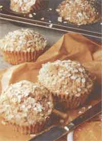

Natural Kitchen
For many people, muffin munching means strolling down the frozen-food aisle at the supermarket or dropping into their nearest Dunkin' Donuts. Who has time to bake? Muffins are actually fast, easy to prepare, and a healthy alternative to fast-food muffins, which are high in fat, sugar, and refined carbohydrates. Versatile for any meal, muffins can also compliment soups and stews, or liven up an unexciting leftover. They certainly qualify as a snack or dessert item by simply calling them cupcakes.
Your children will buy this deception until they're about seven ! years old, at which point one of them will wise up and whine, "But cupcakes have frosting!" So then you whip up some light cream cheese, vanilla, and honey and smear it on the questionable cupcake and everyone is satisfied. I've found this beats the "eat-your-darned-muffin-and-like-it-or-else!" approach.
Muffins will keep in the freezer for 3 to 4 weeks. A good time-saver is to make a double batch and, while they're baking, start another batch using a different recipe. You'll then have 48 muffins prepared in approximately one hour. After they're thoroughly cooled, cover each in saran wrap and store in a zip-lock freezer bag. They can be quickly defrosted and warmed in the microwave as you need them.
When envisioning healthy, cholesterol-lowering muffins, one tends to picture little brown bricks sitting solidly on a platter. Whole-grain/high-fiber muffins can be light and tender. Here are some hints for producing tender, cake-like (but healthy), delicious muffins that I've found after years of experimentation and hundreds of little bricks.
Ingredients: I use whole-wheat pastry flour for all my baking, with the exception of items using baker's yeast. Whole-wheat pastry flour is ground from soft-wheat berries, as opposed to hard-wheat berries used for whole-wheat flour. The pastry flour makes a noticeable difference in producing a lighter baked good without sacrificing any nutrients. Fresh baking powder is a must for baking, because whole grains are heavy. I buy the little cans of baking powder so it's used up before losing its potency. For storing whole-grain flours, keep them in the freezer to help preserve valuable nutrients. Using a culture such as yogurt, buttermilk, or sour milk produces a tender and less-dry baked good. Even two tablespoons of yogurt in a loaf of carrot bread will make a difference. I've also found that when using a natural sweetener such as honey, adding as little as one tablespoon of sugar will produce a lighter product.
Equipment: Using an electric mixer beats air into the baked goods, helping them to rise higher. I use only paper muffin liners and I've discovered only one brand of muffin pans that guarantees excellent results. They are tin-plated pans (the Village Baker series) made by Chicago Metallic. I use their entire line of pans for all my baking because both aluminum and non-stick pans cause the exterior of the baked goods to brown too rapidly, while the inside isn't fully cooked. Natural sweeteners such as molasses or honey cause baked items to brown faster. Using the tin-plated pans will produce your most successful baking results.
Method: Most muffin recipes will tell you to fill the muffin cups 2/3 full. With whole-grain muffins you need to fill them at least 3/4 full if you want an attractive, dome-like muffin. To prevent dry muffins, bake until just done (check by inserting a toothpick into the center of a muffin; they're done when the toothpick comes out almost clean).
These "cupcakes" are a big hit at children's birthday parties. We topped our cupcakes with vanilla frozen yogurt and strawberry and raspberry toppings.
Chocolate Cupcake-Muffins
1/3 cup canola (or any mild-tasting) oil
1/4 cup sugar
1 tablespoon honey
1 teaspoon vanilla
1/2 cup orange juice
1/2 cup lowfat buttermilk
1 egg 1/4 cup unsweetened
cocoa powder
or sifted unsweetened carob powder 1 teaspoon baking soda
2 cups whole-wheat pastry flour
1/2 cup small carob chips
or mini-chocolate chips 1 teaspoon white or cider vineg ar
Preheat oven to 375°F. With an electric mixer, beat the oil, sugar, and honey. Mix in the vanilla, juice, buttermilk, egg, cocoa, and baking soda. Slowly beat in flour and mix until just blended. Stir in carob chips and vinegar. Pour into paper-lined muffin pans and bake 18 to 20 minutes, until an inserted toothpick comes out clean. When fully cooled, sift powdered sugar lightly on top.
To make whipped cream, beat 1 carton whipping cream until it starts to thicken. Add 1 1/2 teaspoons vanilla and 2 tablespoons fructose. Beat until stiff.
Carob Chip Muffins
1/3 cup canola oil
1/4 cup brown sugar
1 tablespoon honey
1 egg
1 cup sour milk
1 teaspoon vanilla
2 1/4 cups sifted whole-wheat pastry flour 2 teaspoons baking powder 1 cup small carob chips - unsweetened or date-sweetened,
or mini-chocolate chips
1/3 cup chopped walnuts mixed with 1 teaspoon cinnamon
Preheat oven to 375°F. Beat oil, sugar, and honey. Add egg, milk, and vanilla and beat again. Slowly mix in flour and baking powder. Stir in carob chips and pour the batter into paper-lined muffin pans. Sprinkle the cinnamon nuts on top of each muffin. Bake for 20 minutes until light brown and an inserted toothpick comes out clean. Yield: 12 muffins.
Banana Oat Muffins 1/4 cup brown sugar
l tablespoon honey
1/3 cup canola oil teaspoon vanilla
1/4 cup lowfat buttermilk
1 egg
1 cup ripened mashed banana
1 tablespoon lemon juice
1/2 teaspoon nutmeg
1/2 teaspoon baking soda
1 1/2 teaspoons baking powder
1/2 cup thin oats (quick-cooking)
1/4 cup oat bran (or wheat germ)
1 1/2 cups sifted whole-wheat pastry flour
Chopped walnuts
Preheat oven to 375°F Beat sugar, honey, and oil together with an electric mixer. Beat in vanilla, buttermilk, egg, banana, and lemon juice. Slowly mix in the dry ingredients. Pour into paper-lined muffin pans at least 3/4 full. Sprinkle walnuts on top of each muffin. Bake for 20 minutes until an inserted toothpick comes out clean. Yield: 12 muffins.
Apple-Nut Muffins
1/4 cup canola oil
1/4 cup molasses (not blackstrap)
1 scant cup lowfat buttermilk
1 egg
1 tablespoon orange rind - grated fine
1 teaspoon cinnamon
1/2 teaspoon ginger
1/4 teaspoon nutmeg 2 cups sifted whole-wheat pastry flour 2 teaspoons baking powder
1 apple - chopped into small pieces
1/3 cup chopped walnuts or pecans
Preheat oven to 375°F. Beat oil, molasses, buttermilk, egg, orange rind, and spices. Slowly beat in flour and baking powder. Stir in the apples and nuts. Pour into paper-lined muffin pans. Bake 20 minutes until the muffins are light brown and a toothpick comes out clean. Yield: 12 muffins
(I discovered these muffins quite by accident when I had to leave the house unexpectedly in the middle of preparing them. The critical step is letting the oats absorb the liquid for 15 to 20 minutes, which improves the texture.)
Oat Bran Muffins 1/3 cup canola oil 2 tablespoons brown sugar 2 tablespoons molasses (not blackstrap) 3/4 cup apple juice (I use the frozen) 1/4 cup lowfat buttermilk 1 egg 1 teaspoon cinnamon 1/2 teaspoon allspice 1/2 teaspoon baking soda 1/4 teaspoon mace or nutmeg 1 cup each: thin oats (quick-cooking), oat bran, sifted whole-wheat pastry flour 1/2 cup currents or raisins (I prefer currents.) 1 teaspoon baking powder
Preheat oven to 375°F. With an electric mixer, mix oil, sugar, and molasses. Add the juice, buttermilk, egg, and beat well. Then add all of the remaining ingredients, except for the baking powder. Mix for 1 minute and then let sit for about 15 to 20 minutes. The batter will slowly become thicker. Then add the baking powder and beat until just mixed into the batter. Pour into paper-lined muffin pans until at least 3/4 full. Bake 20 minutes until they are light brown and an inserted toothpick comes out clean. Yield: 12 muffins
Blueberry Muffins 1/3 cup canola oil (or any mild-tasting oil)
1/4 cup honey
1 tablespoons sugar
1 cup sour milk (put 2 tablespoons lemon juice in 3/4 cup milk)
1 teaspoon grated lemon rind
1 egg
2 1/4 cups sifted whole-wheat pastry flour
2 teaspoons baking powder
1/8 teaspoon nutmeg
1 cup blueberries (frozen are better)
Preheat oven to 375°F. With an electric mixer, beat oil, sugar, and honey. Add milk, rind, and egg and beat well. Mix in flour, baking powder, and nutmeg until blended. Stir in blueberries. Pour into paper-lined muffin pans. Sprinkle the topping on each muffin. Bake 20 minutes until an inserted toothpick comes out clean.
Topping: mix 1 teaspoon flour, 1 teaspoon cinnamon, 1 tablespoon sugar.
BACK TO NATURAL HEALTH
|
 |
|
|